Pruébelo ahora, sin registrarse
Cuenta de demostración con datos ficticios. Se reinicia cada noche y no envía correos ni mensajes reales.
Entrar a la demostraciónDocumentos
Presentación del sistema
A quién está orientado, qué gestiona, seguridad, pagos en línea y asistente de IA.
PDF · 10 páginas · 790 KBPlanes y costos
Qué incluye cada plan, qué permite y qué no, y cuánto cuesta continuar después de la prueba.
PDF · 5 páginas · 238 KBAsí se ve el sistema
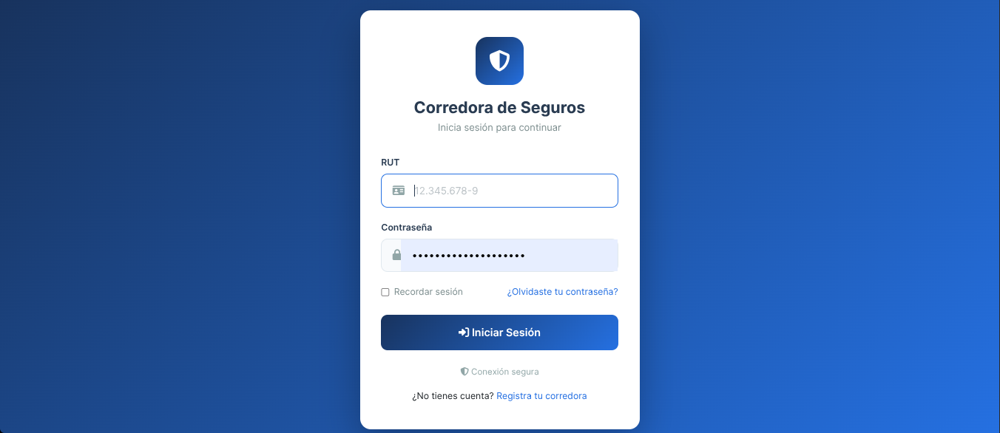
01 · Inicio de sesión con RUT y contraseña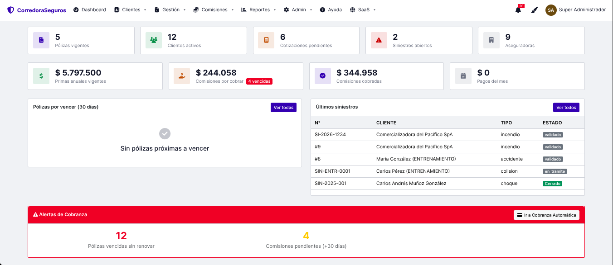
02 · Panel principal: pólizas, clientes, primas y comisiones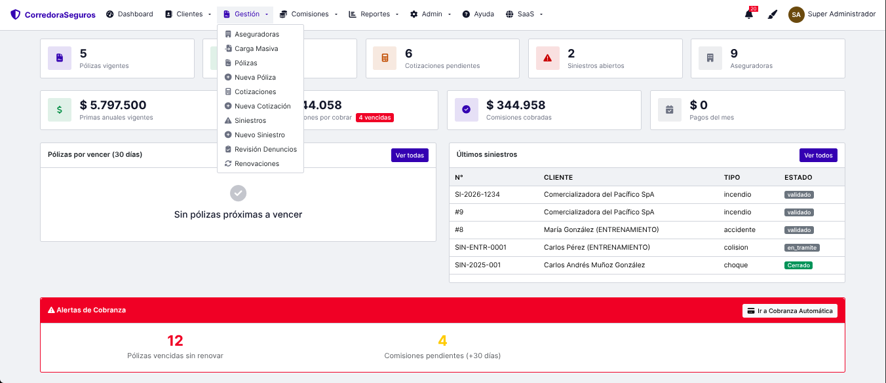
03 · Menú de gestión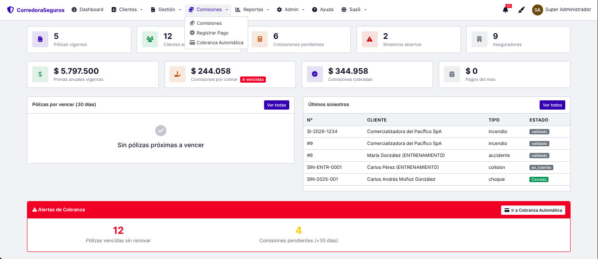
04 · Comisiones, pagos y cobranza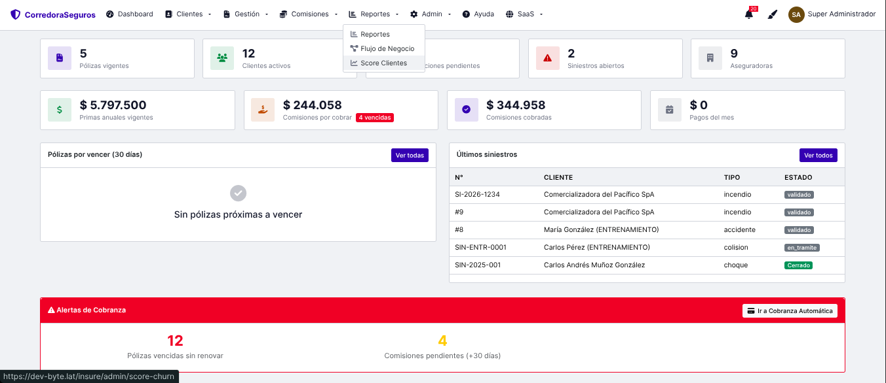
05 · Reportes, flujo de negocio y score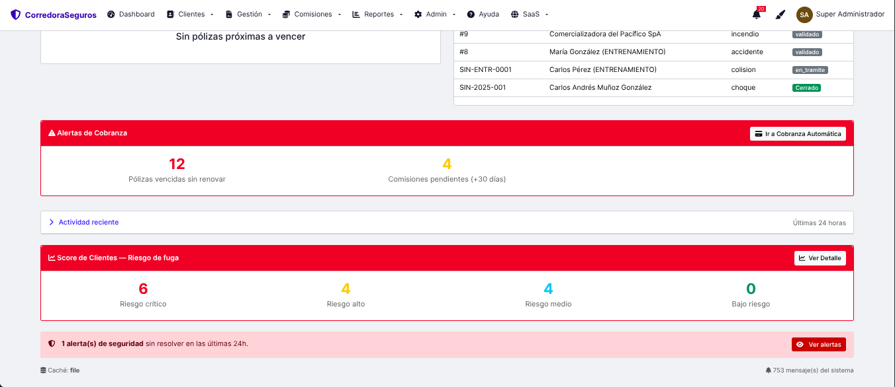
06 · Alertas de cobranza y riesgo de fuga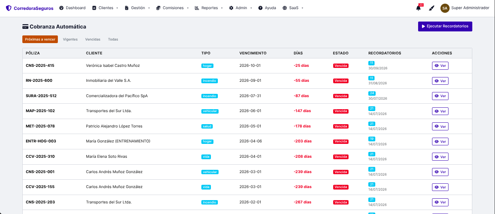
07 · Cobranza automática por vencimiento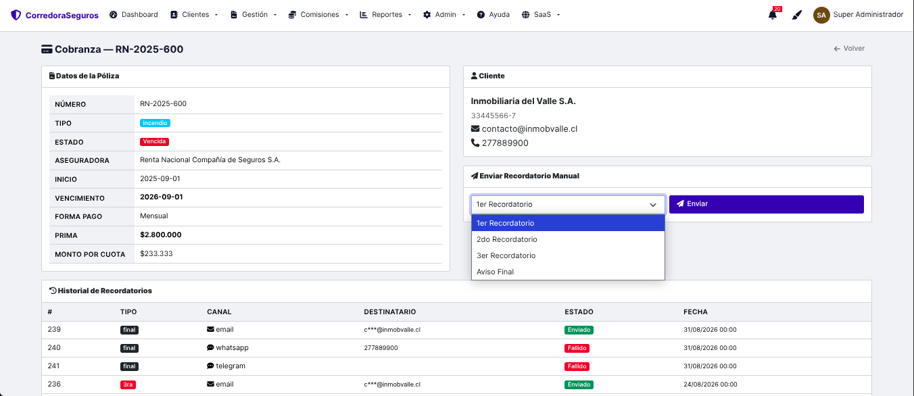
08 · Detalle de cobranza y recordatorios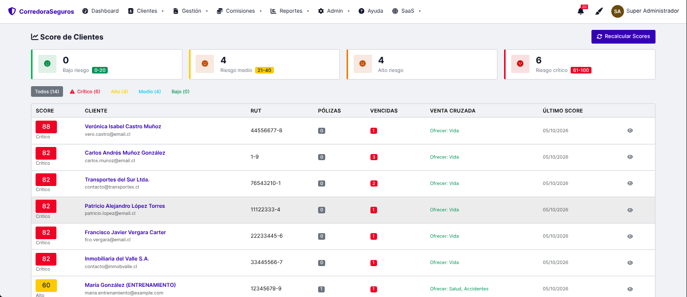
09 · Score de clientes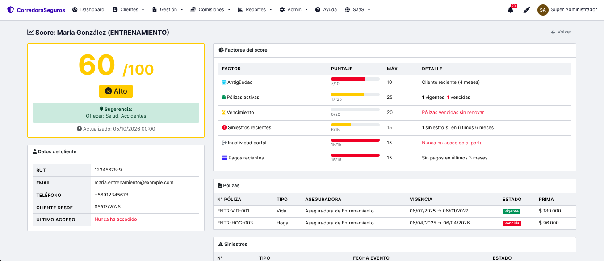
10 · Factores del score de un cliente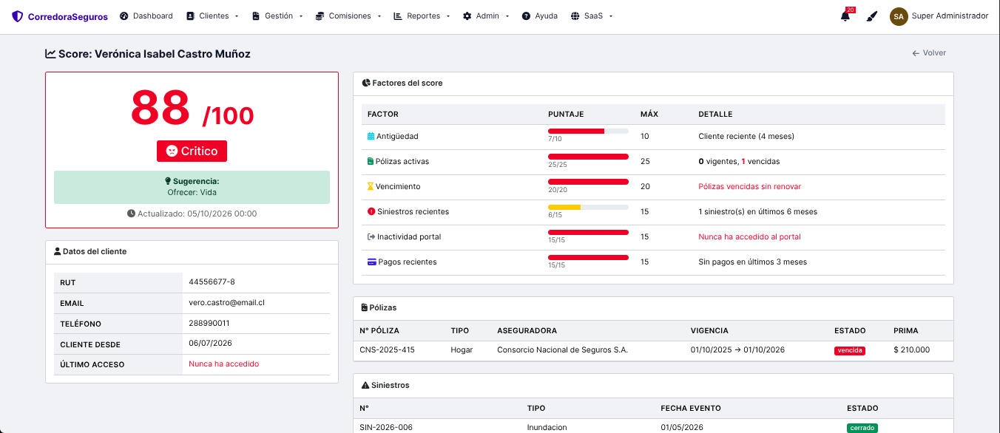
11 · Cliente en riesgo crítico y sugerenciaCapturas del sistema en funcionamiento con datos de demostración: nombres, RUT y montos son ficticios.
¿Le interesa?
Atendemos por correo, sin llamadas ni reuniones, para que usted decida a su ritmo.
jahh.developer@dev-byte.lat
También puede probarlo 6 meses gratis en dev-byte.lat/insure/registro